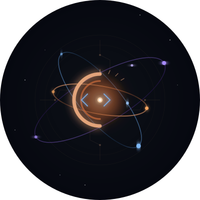

Research Governance Protocol
The serpent eats its own tail — each project feeds the next
Ouroboros is the governance layer for all active research — a Telegram bot with 17 commands, multi-agent orchestration via Claude Code teams, CI/CD automation, and a self-improving workflow that documents its own evolution.
Live metrics. Updated via /page Telegram command.
git log -p → 99.9% savingsA living journal. Updated via Telegram /page command.
How the pieces fit together.
| Component | Description |
|---|---|
| Telegram Bot | Remote control panel — training, infra, notes, team management |
| Agent Teams | Native Claude Code multi-agent orchestration with shared task lists |
| GitHub CI | Lint (ruff), release automation, upstream sync, remote health ping |
| RTK Integration | 78% token savings on all CLI operations via Rust Token Killer |
| Issue Journaling | Every feature starts as an issue, with progress comments and auto-close |
Research coordinated through ouroboros.
| Project | Description | Status |
|---|---|---|
| s_cot | Spectral-R1: latent energy-based GRPO reasoning | Training + Paper |
| long-vqa | MMReD: cross-modal dense context reasoning benchmark | Eval Ongoing |
| bbbo | Bayesian black-box optimization framework | Active Dev |
| ouroboros | This meta-project | Bootstrapping |
Seven rules governing the protocol.